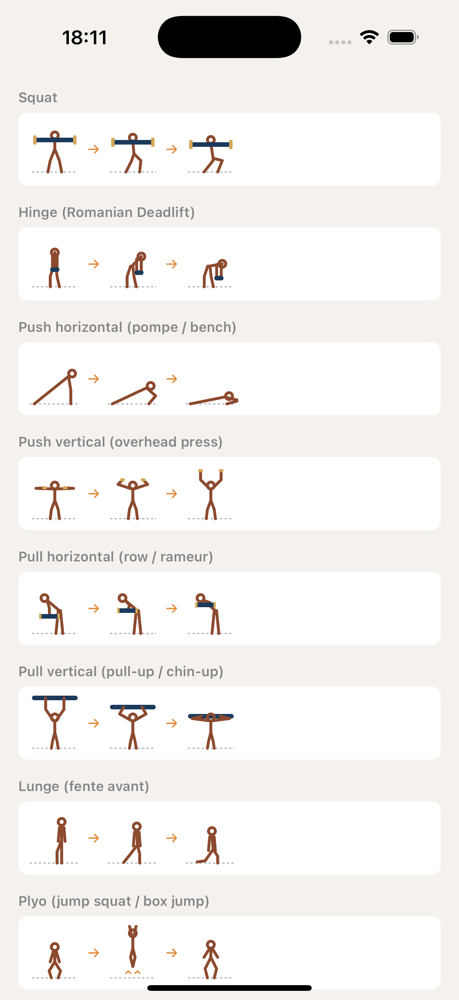
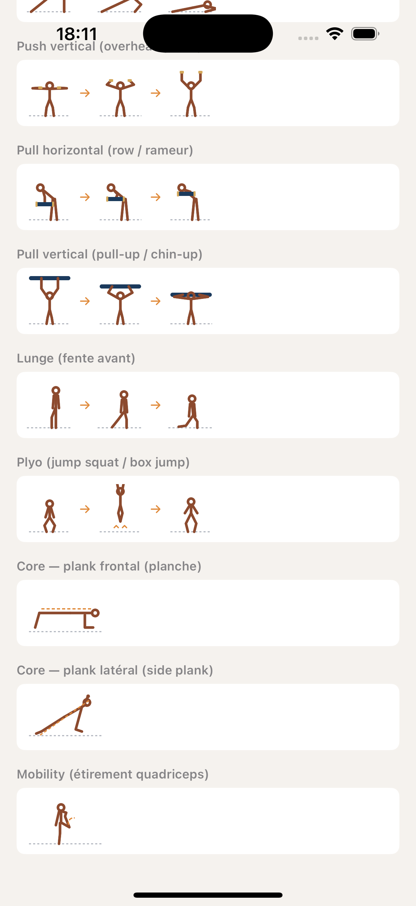

Story 3.19 — 10 illustrations strength
CoachingSage · Jalon 1 + 2 finalisé · 2026-05-23 · Grille didactique validée Sophie
Principe produit Sophie 2026-05-23 : on n'illustre QUE les gestes où l'image est nécessaire à la compréhension. Les sports cardio universels (running, swim, cycling) n'ont pas besoin d'illustration — le geste est connu de tous. Le glossaire fait le travail pour les mots opaques (drill, tempo, Daniels-T...).
🎨 Palette tokens (réutilisée de Color+Coaching.swift)
Silhouette strength (brun rouille)
Équipement / barre (bleu marine)
Charges / haltères (or)
Flèches mouvement + annotations (orange)
Sol pointillé (gris 50%)
① Strength — Squat à Plyo

② Strength — Core + Mobility

Patterns SANS dessin (décision produit) : Running endurance / interval / drills · Swim endurance / drill rattrapé · Cycle endurance / interval. Ces 7 patterns tombent automatiquement sur le SF Symbol sport en mode
.palette multi-couleurs (
ExercisePatternGenericFallback).
Glossaire enrichi pour compenser :
drill (FR + EN) — définition générique avec exemple du drill rattrapé natation : « un bras tendu devant attend que l'autre bras fasse le cycle complet et vienne le toucher, puis ce dernier redémarre. Isole la glisse et la coordination. »plank / planche / side plank — déjà ajouté Jalon 1